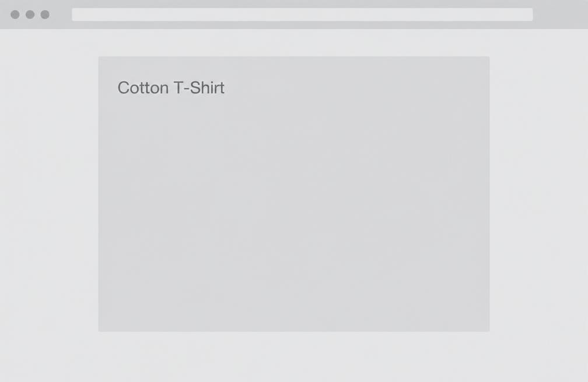
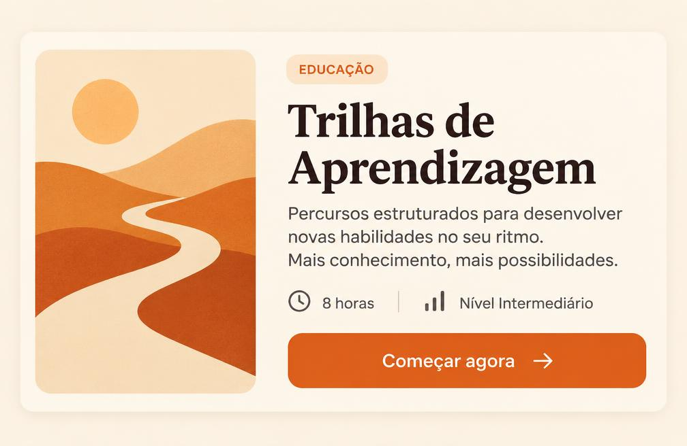
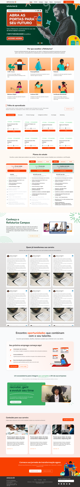
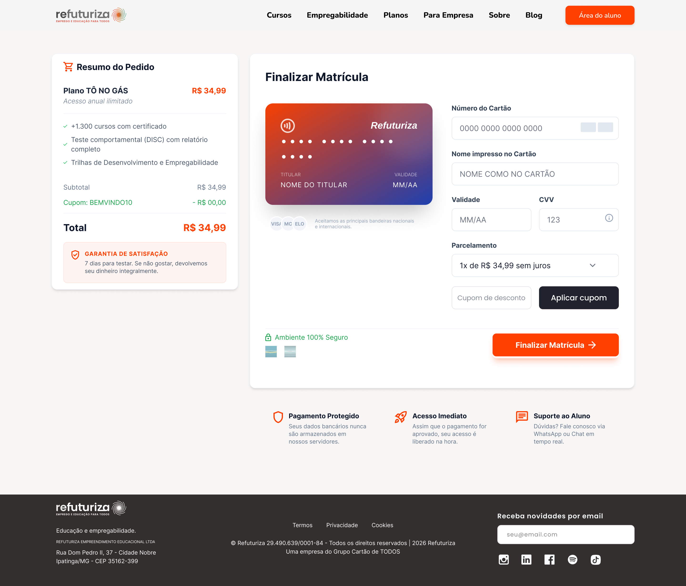
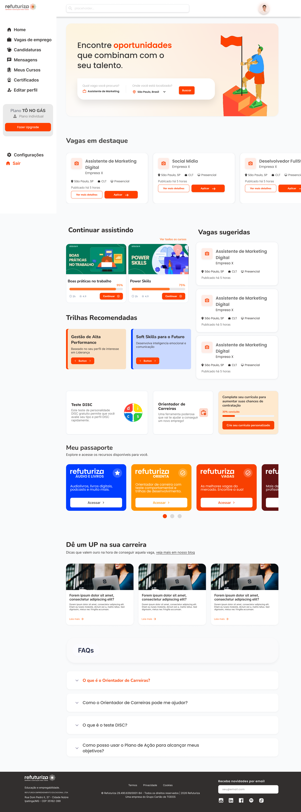

01 · Contexto
Refuturiza
Redesign da experiência digital e evolução do Design System. Reestruturei a Home para tornar a proposta da Refuturiza mais clara, melhorar a descoberta dos produtos e criar uma base de interface mais consistente e escalável.
Meu papel
Product Designer responsável por UX/UI, discovery, arquitetura da informação, Design System, prototipação, handoff e acompanhamento da implementação.
Colaboração
Product · Marketing · Development
O problema
O site havia se tornado um ponto de atrito.
Informações pouco claras sobre os produtos
Navegação pouco intuitiva
Links e botões com problemas
Problemas de carregamento
Estrutura inadequada para apresentar o ecossistema
Dependência de dev para alterações simples de conteúdo
Como reorganizar a experiência para tornar os produtos mais compreensíveis e, ao mesmo tempo, criar uma estrutura que pudesse evoluir com o negócio?
Do problema à implementação
Discovery
Investigação com pessoas envolvidas no produto e consolidação dos principais problemas.
UX
Arquitetura da informação, estrutura da Home, organização de conteúdo e prototipação.
UI
Interfaces, componentes, estados, responsividade e linguagem visual.
Design System
Evolução da base existente para uma estrutura mais completa e reutilizável.
Design × Tech
Handoff, especificações, acompanhamento da implementação e Design QA.
02 · Discovery
Antes de desenhar, fomos investigar.
O problema não estava só na interface. Conduzi uma investigação interna com 10 pessoas para entender onde estavam os principais atritos, considerando também o contexto de Marketing e as necessidades levantadas pelo Development.
3
Customer Success
5
Coordenadores
2
Diretores
O site também era usado pelo Customer Success como referência para atendimento, enquanto coordenadores e direção tinham visão sobre produtos e necessidades do negócio.
Clareza
As informações apresentavam os produtos de maneira suficientemente clara?
Descoberta
Era fácil entender o que a Refuturiza oferecia e encontrar os produtos?
Experiência
A navegação e os elementos da interface eram intuitivos?
Operação
Como atualizar conteúdo sem transformar cada alteração em uma demanda de dev?
Benchmark
Sem um concorrente direto que representasse todo o ecossistema, analisei produtos de categorias próximas para identificar padrões de interação e oportunidades aplicáveis ao contexto da Refuturiza.
Educação
Alura · Senac · Udemy · Descomplica · Coursera · Domestika
Empregabilidade
Vagas · Gupy
O que observei
O que os dados indicaram · 3 direcionadores
01
Produtos mais compreensíveis
Os cards traziam o nome dos produtos, mas pouco contexto. Direção: apresentação mais informativa e acionável.
02
Home que representa o ecossistema
A estrutura concentrava poucos elementos. Direção: reorganizar a arquitetura e distribuir melhor os conteúdos.
03
Conteúdo mais flexível
Marketing precisava de autonomia. Direção: usar o backoffice existente como camada de gerenciamento de conteúdo.
03 · Decisões
Problema → Evidência → Decisão.
Em vez de telas bonitas, mostro a lógica por trás de cada escolha.
Tornar os produtos exploráveis
A evidência central do case
Problema
Cards com apenas o nome, sem deixar claro o que o usuário encontraria ao acessar.
Evidência
Na análise de comportamento com Microsoft Clarity, usuários clicavam repetidamente nos cards esperando mais informação.
Decisão
Transformar os cards em elementos mais informativos e acionáveis.
Antes

Depois

Os produtos passaram a ter uma apresentação mais clara dentro da Home, reduzindo a distância entre “o que é isso?” e “quero conhecer esse produto”.
Reorganizar a Home
Antes: banner → produtos → preço → ferramenta de RH → footer. A Home deixou de funcionar apenas como apresentação institucional e passou a atuar como porta de entrada para o ecossistema.
Dar autonomia ao Marketing
Alterações de banners, textos, imagens e links dependiam do fluxo com Development. O time já tinha um backoffice usado por outros produtos — trabalhei junto ao Development para estruturar a Home integrada a ele.
Dentro das possibilidades definidas para o produto — o conteúdo evolui sem exigir uma nova alteração de código para cada atualização prevista no escopo do backoffice.
Criar uma base de interface reutilizável
A experiência precisava crescer sem gerar novas inconsistências a cada página ou produto. Evoluí o Design System para além de cores e tipografia.
Fundamentos
Cores · tipografia · grid · espaçamento · tokens
Componentes
Botões · inputs · cards · menus · modais · badges · estados · componentes responsivos
O Design System não foi tratado apenas como biblioteca visual, mas como uma forma de organizar decisões reutilizáveis em diferentes partes do ecossistema.
04 · Solução
Uma base de produto, não só telas.

Home
Nova hierarquia e apresentação dos produtos.

Produto
A informação ficou mais clara e acionável.
Jornada do usuário
Home
Conhece o ecossistema de produtos.

Cadastro
Cria sua conta na plataforma.
Checkout
Escolhe o plano e finaliza a matrícula.

Área logada
Acessa vagas, cursos e trilhas.

Perfil
Gerencia dados, pagamentos e dependentes.
Design System · de identidade a sistema de produto
Aa Aa
Mobile
Tablet
Desktop
Estrutura: Brand → Tokens → Componentes → Padrões → Interfaces. As decisões de responsividade consideraram hierarquia, distribuição de conteúdo, navegação, cards, espaçamento, CTAs e legibilidade — não apenas reduzir o tamanho das telas.
Backoffice
05 · Design × Tech
O trabalho não terminou no Figma.
Fluxo
Design QA
Após a implementação, acompanhei a interface para verificar consistência visual, componentes, espaçamentos, hierarquia, comportamento responsivo, estados e divergências entre design e implementação. Quando uma adaptação técnica fazia sentido, ela era discutida com Development em vez de exigir reprodução literal do arquivo.
Meu papel não terminou no handoff. Acompanhei a implementação para garantir que a intenção de design fosse preservada no produto real.
O que forneci durante a implementação
06 · Resultado
O que mudou.
Experiência
A Home passou a apresentar o ecossistema de produtos de maneira mais estruturada e compreensível.
Descoberta
Os produtos passaram a ter uma apresentação mais informativa e acionável.
Sistema
O Design System criou uma base reutilizável para evolução da interface.
Operação
A integração com o backoffice permitiu que Marketing atualizasse conteúdos dentro das possibilidades definidas para o sistema.
Em produção
- Home redesenhada
- Integração com backoffice
- Nova base de Design System
- Estrutura responsiva
Em evolução
- Área logada
- Vagas já disponíveis
- Demais integrações conforme dependências dos parceiros
Futuro
- Cursos integrados
- Videoaulas
- Gamificação / evolução da aprendizagem
O projeto estabeleceu uma nova base de experiência e de interface para a evolução do ecossistema digital da Refuturiza. A principal transformação foi conectar uma experiência mais clara para o usuário a uma estrutura mais flexível para os times que mantêm o produto.
01
Pesquisa muda a direção do design
Os problemas mais relevantes não estavam na aparência, mas na forma como informação e produtos eram apresentados.
02
Design System é infraestrutura
Um sistema eficiente apoia decisões e a evolução do produto, não apenas organiza componentes.
03
Design não termina no handoff
Trabalhar próximo de Development equilibra intenção de experiência e viabilidade técnica.
Não havia uma linha de base confiável de métricas históricas que permitisse atribuir ao redesign um impacto quantitativo. Por isso, o case apresenta os resultados observáveis da transformação e não estima métricas que não foram medidas.
Fechamento
De uma Home desatualizada para uma base de produto estruturada.
Product Design · UX Research · Design System · Design × Tech